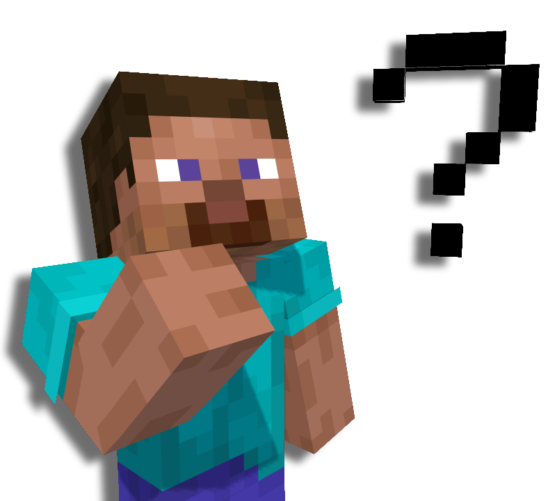

TOASTERLANDS NETWORK
Un proyecto ambicioso
Que somos?

TOASTERLANDS NETWORK es un proyecto que unifica todas mis ambiciones, hacer una NETWORK de Minecraft, una Pagina Web, Creacion de mapas de Aventura, Texturpack, Creacion de Video, Narrativa, entre otras cosas.